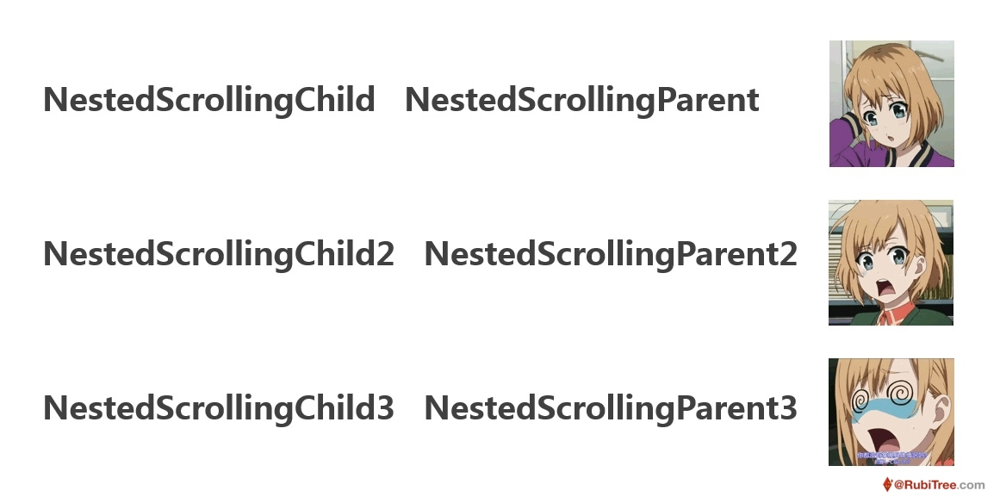
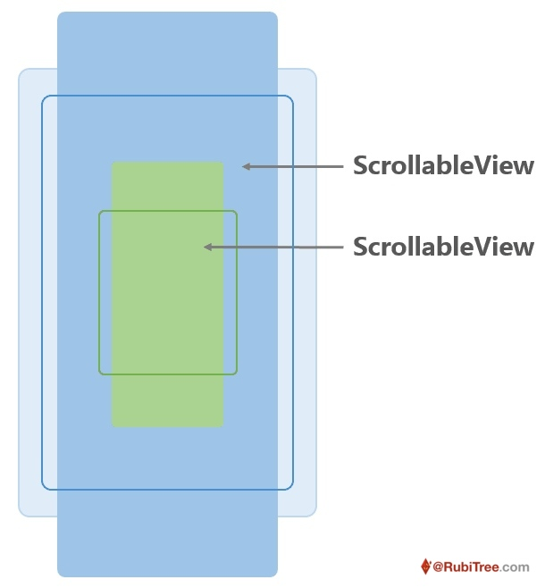
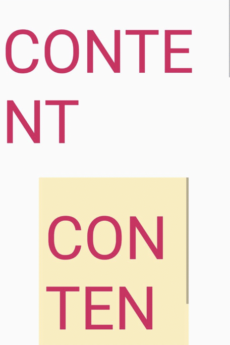
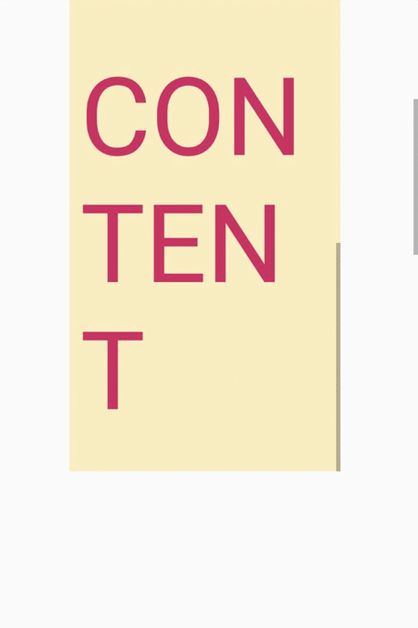
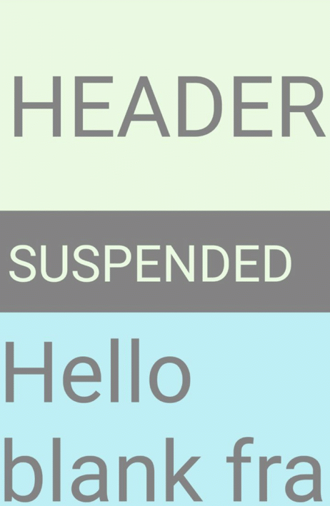

（转载请注明作者：RubiTree，地址：blog.rubitree.com ）
目录：
NestedScrolling 机制翻译过来叫嵌套滑动机制（本文将混用），它提供了一种优雅解决嵌套滑动问题的方案，具体是什么方案呢？我们从嵌套的同向滑动说起。
1. 嵌套同向滑动
1.1. 嵌套同向滑动的问题
所谓嵌套同向滑动，就是指这样一种情况：两个可滑动的View内外嵌套，而且它们的滑动方向是相同的。

这种情况如果使用一般的处理方式，会出现交互问题，比如使用两个ScrollView进行布局，你会发现，触摸着内部的ScrollView进行滑动，它是滑不动的（不考虑后来 Google 给它加的NestedScroll开关）：

1.2. 分析问题原因
（温馨提示：本文涉及事件分发的内容比较多，建议对事件分发不太熟悉的同学先阅读另一篇透镜《看穿 > 触摸事件分发》）
如果你熟悉 Android 的触摸事件分发机制，那么原因很好理解：两个ScrollView嵌套时，滑动距离终于达到滑动手势判定阈值（mTouchSlop）的这个MOVE事件，会先经过父 View 的onInterceptTouchEvent()方法，父 View 于是直接把事件拦截，子 View 的onTouchEvent()方法里虽然也会在判定滑动距离足够后调用requestDisallowInterceptTouchEvent(true)，但始终要晚一步。
而这个效果显然是不符合用户直觉的
那用户希望看到什么效果呢？
- 大部分时候，用户希望看到：当手指触摸内部
ScrollView进行滑动时，能先滑动内部的ScrollView，只有当内部的ScrollView滑动到尽头时，才滑动外部的ScrollView
这看上去非常自然，也跟触摸事件的处理方式一致，但相比触摸事件的处理，要在滑动时实现同样的效果却会困难很多
- 因为滑动动作不能立刻识别出来，它的处理本身就需要通过事件拦截机制进行，而事件拦截机制实质上跟《看穿 > 触摸事件分发》中第一次试造的轮子一样，只是单向的，而且方向从外到内，所以无法做到：先让内部拦截滑动，内部不拦截滑动时，再在让外部拦截滑动
那能不能把事件拦截机制变成双向的呢？不是不行，但这显然违背了拦截机制的初衷，而且它很快会发展成无限递归的：双向的事件拦截机制本身是否也需要一个拦截机制呢？于是有了拦截的拦截，然后再有拦截的拦截的拦截...
1.3. 尝试解决问题
换一个更直接的思路，如果我们的需求始终是内部滑动优先，那是否可以让外部 View「拦截滑动的判定条件」比内部 View「申请外部不拦截的判定条件」更严格，从而让滑动距离每次都先达到「申请外部不拦截的判定条件」，子 View 就能够在父 View 拦截事件前申请外部不拦截了。
能看到在ScrollView中，「拦截滑动的判定条件」和「申请外部不拦截的判定条件」都是Math.abs(deltaY) > mTouchSlop，我们只需要增大「拦截滑动的判定条件」时的mTouchSlop就行了。
但实际上这样做并不好，因为mTouchSlop到底应该增加多少，是件不确定的事情，手指滑动的快慢和屏幕的分辨率可能都会对它有影响。
所以可以换一种实现，那就是让第一次「拦截滑动的判定条件」成立时，先不进行拦截，如果内部没有申请外部不拦截，第二次条件成立时，再进行拦截，这样也同样实现了开始的思路。
于是继承 ScrollView，覆写它的onInterceptTouchEvent()：
class SimpleNestedScrollView(context: Context, attrs: AttributeSet) : ScrollView(context, attrs) {
private var isFirstIntercept = true
override fun onInterceptTouchEvent(ev: MotionEvent): Boolean {
if (ev.actionMasked == MotionEvent.ACTION_DOWN) {
isFirstIntercept = true
}
val result = super.onInterceptTouchEvent(ev)
if (result && isFirstIntercept) {
isFirstIntercept = false
return false
}
return result
}
}
它的效果是这样，能看到确实实现了让内部先获取事件：

1.4. 第一次优化
但我们希望体验能更好一点，从上图能看到，内部即使在自己无法滑动的时候，也会对事件进行拦截，无法通过滑动内部来让外部滑动。其实内部应该在自己无法滑动的时候，直接在onTouchEvent()返回false，不触发「申请外部不拦截的判定条件」，就能让内外都有机会滑动。
这个要求非常通用而且合理，在SimpleNestedScrollView基础上进行简单修改，加上以下代码：
private var isNeedRequestDisallowIntercept: Boolean? = null
override fun onTouchEvent(ev: MotionEvent): Boolean {
if (ev.actionMasked == MotionEvent.ACTION_DOWN) isNeedRequestDisallowIntercept = null
if (ev.actionMasked == MotionEvent.ACTION_MOVE) {
if (isNeedRequestDisallowIntercept == false) return false
if (isNeedRequestDisallowIntercept == null) {
val offsetY = ev.y.toInt() - getInt("mLastMotionY")
if (Math.abs(offsetY) > getInt("mTouchSlop")) { // 滑动距离足够判断滑动方向是上还是下后
// 判断自己是否能在对应滑动方向上进行滑动（不能则返回false）
if ((offsetY > 0 && isScrollToTop()) || (offsetY < 0 && isScrollToBottom())) {
isNeedRequestDisallowIntercept = false
return false
}
}
}
}
return super.onTouchEvent(ev)
}
private fun isScrollToTop() = scrollY == 0
private fun isScrollToBottom(): Boolean {
return scrollY + height - paddingTop - paddingBottom == getChildAt(0).height
}
- 其中
getInt("mLastMotionY")和getInt("mTouchSlop")为反射代码，获取私有的mLastMotionY和mTouchSlop属性 - 这段代码省略了多点触控情况的判断
运行效果如下：

这样就完成了对嵌套滑动View最基本的需求：大家都能滑了。
后来我发现了一种更野的路子，不用小心翼翼地让改动尽量小，既然内部优先，完全可以让内部的ScrollView在DOWN事件的时候就申请外部不拦截，然后在滑动一段距离后，如果判断自己在该滑动方向无法滑动，再取消对外部的拦截限制，思路是类似的但代码更简单。
class SimpleNestedScrollView(context: Context, attrs: AttributeSet) : ScrollView(context, attrs) {
override fun dispatchTouchEvent(ev: MotionEvent): Boolean {
if (ev.actionMasked == MotionEvent.ACTION_DOWN) parent.requestDisallowInterceptTouchEvent(true)
if (ev.actionMasked == MotionEvent.ACTION_MOVE) {
val offsetY = ev.y.toInt() - getInt("mLastMotionY")
if (Math.abs(offsetY) > getInt("mTouchSlop")) {
if ((offsetY > 0 && isScrollToTop()) || (offsetY < 0 && isScrollToBottom())) {
parent.requestDisallowInterceptTouchEvent(false)
}
}
}
return super.dispatchTouchEvent(ev)
}
}
运行的效果跟上面是一样的，不重复贴图了。
1.5. 第二次优化
但这两种方式目前为止都没有实现最好的交互体验，最好的交互体验应该让内部不能滑动时，能接着滑动外部，甚至在你滑动过程中快速抬起时，接下来的惯性滑动也能在两个滑动View间传递。
由于滑动这个交互的特殊性，我们可以在外部对它进行操作，所以连续滑动的实现非常简单，只要重写scrollBy就好了，所以在已有代码的基础上再加上下面的代码（上面的两种思路都是加一样的代码）：
override fun scrollBy(x: Int, y: Int) {
if ((y > 0 && isScrollToTop()) || (y < 0 && isScrollToBottom())) {
(parent as View).scrollBy(x, y)
} else {
super.scrollBy(x, y)
}
}
效果如下：

而惯性滑动的实现就会相对复杂一点，得对computeScroll()方法下手，要做的修改会多一些，这里暂时不去实现了，但做肯定是没问题的。
1.6. 小结
到这里我们对嵌套滑动交互的理解基本已经非常通透了，知道了让我们自己实现也就那么回事，主要需要解决下面几个问题：
- 在内部 View 可以滑动的时候，阻止外部 View 拦截滑动事件，先滑动内部 View
- 在用户一次滑动操作中，当内部 View 滑动到终点时，切换滑动对象为外部 View，让用户能够连续滑动
- 在用户快速抬起触发的惯性滑动中，当内部 View 滑动到终点时，切换滑动对象为外部 View，让惯性能够连续
这时就可以（终于可以了）来看看看系统提供的 NestedScrolling 机制是怎么完成嵌套滑动需求的，跟我们的实现相比，有什么区别，是更好还是更好？
（转载请注明作者：RubiTree，地址：blog.rubitree.com ）
2. NestedScrolling 机制
2.1. 原理
与我们不同，我们只考虑了给ScrollView增加支持嵌套滑动的特性，但系统开发者需要考虑给所有有滑动交互的 View 增加这个特性，所以一个直接的思路是在 View 里加入这个机制。
那么要怎么加，加哪些东西呢？
- 进一步梳理前面要解决的问题，在嵌套滑动中，是能明确区分两类作用对象的：一个是内部 View，一个是外部 View。而且它们的主被动关系也非常明确：因为内部 View 离手指更近，我们肯定希望它能优先消费事件，但我们同时还希望在某些情况下事件能在内部不消耗的时候给外部消耗，这当然也是让内部来控制，所以内部是主动，外部是被动（回到空气马达）
- 由此整个嵌套滑动的过程可以认为是这样的：触摸事件交给内部 View 进行消费，内部 View 执行相关逻辑，在合适的时候对外部 View 进行一定的控制，两者配合实现嵌套滑动
- 这就包括了两部分逻辑：
- 内部 View 中的主动逻辑：需要主动阻止外部 View 拦截事件，需要自己进行滑动，并在合适的时候让外部 View 配合进行剩下的滑动
- 这部分是核心内容，前面我们自己实现的也是这部分内容
- 外部 View 中的被动逻辑
- 基本就是配合行动了，这部分逻辑不多
- 内部 View 中的主动逻辑：需要主动阻止外部 View 拦截事件，需要自己进行滑动，并在合适的时候让外部 View 配合进行剩下的滑动
- 由于
View里是不能放其他View的，它只能是内部的、主动的角色，而ViewGroup既可以放在另一ViewGroup里，它里边也可以放其他的View，所以它可以是内部的也可以是外部的角色 - 这正好符合
View和ViewGroup的继承关系，所以一个很自然的设计是：在View中加入主动逻辑，在ViewGroup中加入被动逻辑
因为不是每个View和ViewGroup都能够滑动，滑动只是众多交互中的一种，View和ViewGroup不可能直接把所有事情都做了然后告诉你：Android 支持嵌套滑动了哦~ 所以 Google 加入的这些逻辑其实都是帮助方法，相关的View需要选择在合适的时候进行调用，最后才能实现嵌套滑动的效果。
先不说加了哪些方法，先说 Google 希望能帮助你实现一个什么样的嵌套滑动效果：
- 从逻辑上区分嵌套滑动中的两个角色：
ns child和ns parent，对应了上面的内部 View 和外部 View- 注：1）这里我用「ns」表示
nested scroll的缩写；2）为什么叫逻辑上？因为实际上它允许你一个 View 同时扮演两个角色
- 注：1）这里我用「ns」表示
ns child会在收到DOWN事件时，找到自己祖上中最近的能与自己匹配的ns parent，与它进行绑定并关闭它的事件拦截机制- 然后
ns child会在接下来的MOVE事件中判定出用户触发了滑动手势，并把事件流拦截下来给自己消费 - 消费事件流时，对于每一次
MOVE事件增加的滑动距离：ns child并不是直接自己消费，而是先把它交给ns parent，让ns parent可以在ns child之前消费滑动- 如果
ns parent没有消费或是没有消费完，ns child再自己消费剩下的滑动 - 如果
ns child自己还是没有消费完这个滑动，会再把剩下的滑动交给ns parent消费 - 最后如果滑动还有剩余，
ns child可以做最终的处理
- 同时在
ns child的computeScroll()方法中，ns child也会把自己因为用户fling操作引发的滑动，与上一条中用户滑动屏幕触发的滑动一样，使用「parent -> child -> parent -> child」的顺序进行消费
注：
- 以上过程参考当前最新的
androidx.core 1.1.0-alpha01中的NestedScrollView和androidx.recyclerView 1.1.0-alpha01中的RecyclerView实现，与之前的版本细节略有不同，后文会详述其中差异- 为了理解上的方便，有几处细节的描述做了简化：其实在
NestedScrollView、RecyclerView这类经典实现中：
- 在
ns child滚动时，只要用户手指一按下，ns child就会拦截事件流，不用等到判断出滑动手势（具体可以关注源码中的mIsBeingDragged字段）
- 这个细节是合理的，会让用户体验更好
- （后文将不会对这个细节再做说明，而是直接用简化的描述，实现时如果要提高用户体验，需要注意这个细节）
- 按照 Android 的触摸事件分发规则，如果
ns child内部没有要消费事件的 View，事件也将直接交给ns child的onTouchEvent()消费。这时在NestedScrollView等ns child的实现中，接下来在onTouchEvent()里判断出用户是要滑动自己之前，就会把用户的滑动交给ns parent进行消费（回到4.4）
- 这个设计我个人觉得不太合理，既然是传递滑动那就应该在判断出用户确实在滑动之后才开始传递，而不是这样直接传递，而且在后文的实践部分，你确实能看到这种设计带来的问题
- （后文的描述中如果没有特别说明，也是默认忽略这个细节）
- 描述中省略了关于直接传递 fling 的部分，因为这块的设计存在问题，而且最新版本这部分机制的作用已经非常小了，后面这点会详细讲
你会发现，这跟我们自己实现嵌套滑动的方式非常像，但它有这些地方做得更好（具体怎么实现的见后文）
ns child使用更灵活的方式找到和绑定自己的ns parent，而不是直接找自己的上一级结点ns child在DOWN事件时关闭ns parent的事件拦截机制单独用了一个 Flag 进行关闭，这就不会关闭ns parent对其他手势的拦截，也不会递归往上关闭祖上们的事件拦截机制。ns child直到在MOVE事件中确定自己要开始滑动后，才会调用requestDisallowInterceptTouchEvent(true)递归关闭祖上们全部的事件拦截- 对每一次
MOVE事件传递来的滑动，都使用「parent -> child -> parent -> child」机制进行消费，让ns child在消费滑动时与ns parent配合更加细致、紧密和灵活 - 对于因为用户
fling操作引发的滑动，与用户滑动屏幕触发的滑动使用同样的机制进行消费，实现了完美的惯性连续效果
2.2. 使用
到这一步，我们再来看看 Google 给 View 和 ViewGroup 加了哪些方法？又希望我们什么时候怎么去调用它们？
加入的需要你关心的方法一共有这些（只注明了关键返回值和参数，参考当前最新的版本 androidx.core 1.1.0-alpha01）：
// 『View』
setNestedScrollingEnabled(true) // 调用
startNestedScroll() // 调用
dispatchNestedPreScroll(int delta, int[] consumed) // 调用
dispatchNestedScroll(int unconsumed, int[] consumed) // 调用
stopNestedScroll() // 调用
// 『ViewGroup』
boolean onStartNestedScroll() // 覆写
int getNestedScrollAxes() // 调用
onNestedPreScroll(int delta, int[] consumed) // 覆写
onNestedScroll(int unconsumed, int[] consumed) // 覆写
怎么调用这些方法取决于你要实现什么角色
- 在你实现一个
ns child角色时，你需要：- 在实例化的时候调用
setNestedScrollingEnabled(true)，启用嵌套滑动机制 - 在
DOWN事件时调用startNestedScroll()方法，它会「找到自己祖上中最近的与自己匹配的ns parent，进行绑定并关闭ns parent的事件拦截机制」 - 在判断出用户正在进行滑动后
- 先常规操作：关闭祖上们全部的事件拦截，同时拦截自己子 View 的事件
- 然后调用
dispatchNestedPreScroll()方法，传入用户的滑动距离，这个方法会「触发ns parent对滑动的消费，并且把消费结果返回」 - 然后
ns child可以开始自己消费剩下滑动 ns child自己消费完后调用dispatchNestedScroll()方法，传入最后没消费完的滑动距离，这个方法会继续「触发ns parent对剩下滑动的消费，并且把消费结果返回」ns child拿到最后没有消费完的滑动，做最后的处理，比如显示 overscroll 效果，比如在 fling 的时候停止scroller
- 如果你希望惯性滑动也能传递给
ns parent，那么在View的computeScroll()方法中，对于每个scroller计算到的滑动距离，与MOVE事件中处理滑动一样，按照这个顺序进行消费：「dispatchNestedPreScroll()-> 自己 ->dispatchNestedScroll()-> 自己」 - 在
UP、CANCEL事件中以及computeScroll()方法中惯性滑动结束时，调用stopNestedScroll()方法，这个方法会「打开ns parent的事件拦截机制，并取消与它的绑定」
- 在实例化的时候调用
- 在你实现一个
ns parent角色时，你需要：- 重写方法
boolean onStartNestedScroll(View child, View target, int nestedScrollAxes)，通过传入的参数，决定自己对这类嵌套滑动感兴趣，在感兴趣的情况中返回true，ns child就是通过遍历所有ns parent的这个方法来找到与自己匹配的ns parent - 如果选择了某种情况下支持嵌套滑动，那么在拦截滑动事件前，调用
getNestedScrollAxes()，它会返回你某个方向的拦截机制是否已经被ns child关闭了，如果被关闭，你就不应该拦截事件了 - 开启嵌套滑动后，你可以在
onNestedPreScroll和onNestedScroll方法中耐心等待ns child的消息，没错，它就对应了你在ns child中调用的dispatchNestedPreScroll和dispatchNestedScroll方法，你可以在有必要的时候进行自己的滑动，并且把消耗掉的滑动距离通过参数中的数组返回
- 重写方法
这么实现的例子可以看 ScrollView，只要打开它的setNestedScrollingEnabled(true)开关，你就能看到嵌套滑动的效果：（实际上ScrollView实现的不是完美的嵌套滑动，原因见下一节）

ns parent还好，但ns child的实现还会有大量的细节（包括实践部分会提到的「ns parent偏移导致的 event 校正」等等），光是描述可能不够直接，为此我也为ns child准备了一份参考模板：NestedScrollChildSample
注意
- 虽然模板在IDE里不会报错，但这不是可以运行的代码，这是剔除
NestedScrollView中关于ns parent的部分，得到的可以认为是官方推荐的ns child实现- 同时，为了让主线逻辑更加清晰，删去了多点触控相关的逻辑，实际开发如果需要，可以直接参考
NestedScrollView中的写法，不会麻烦太多（有空会写多点触控的透镜系列XD）- 其中的关键部分是在触摸和滚动时怎么调用
NestedScrollingChild接口的方法，也就是onInterceptTouchEvent()、onTouchEvent()、computeScroll()中大约 200 行的代码
另外，以上都说的是单一角色时的使用情况，有时候你会需要一个 View 扮演两个角色，就需要再多做一些事情，比如对于ns parent，你要时刻注意你也是 ns child，在来生意的时候也照顾一下自己的ns parent，这些可以去看 NestedScrollView 的实现，不在这展开了。
（转载请注明作者：RubiTree，地址：blog.rubitree.com ）
3. 历史的消防车滚滚向前
但是有人就问了：（回到答案）
- 我怎么看到别人讲，你必须实现
NestedScrollingParent和NestedScrollingChild这两个接口，然后利用上NestedScrollingParentHelper和NestedScrollingChildHelper这两个帮助类，才能实现一个支持嵌套滑动的自定义 View 啊，而且大家都称赞这是一种很棒的设计呢，怎么到你这就变成了直接加在View和 ViewGroup 里的方法了，这么普通的 DISCO 嘛？而且题图里也看到有这几个接口的啊，你难道是标题党吗？（赞一个居然还记得题图） - 为什么不用实现接口也能实现嵌套滑动，又为什么几乎所有实现嵌套滑动的 View 又都实现了这两个接口呢？
- 为什么明明嵌套滑动机制在
NestedScrollingParent和NestedScrollingChild这两个接口里放了那么多方法，你却只讲9个呢？ - 为什么接口里的 fling 系列方法你不讲？
- 为什么有
NestedScrollingChild，有NestedScrollingChild2，工作不饱和的同学会发现最近 Google 还增加了NestedScrollingChild3，这都是在干哈？改了些什么啊？
别着急，要解释这些问题，还得先来了解下历史，翻翻sdk和support library家的老黄历：
（嫌弃太长也可以直接前往观看小结）
（事情要从五年前说起...）
3.1. 第一个版本，2014年9月
在 Android 5.0 / API 21 (2014.9) 时， Google 第一次加入了 NestedScrolling 机制。
虽然在版本更新里完全没有提到，但是在View和 ViewGroup 的源码里你已经能看到其中的嵌套滑动相关方法。
而且此时使用了这些方法实现了嵌套滑动效果的 View 其实已经有不少了，除了我们讲过的ScrollView，还有AbsListView、ActionBarOverlayLayout等，而这些也基本是当时所有跟滑动有关的 View 了。
所以，如上文嵌套ScrollView的例子所示，在Android 5.0时大家其实就能通过setNestedScrollingEnabled(true)开关启用 View 的嵌套滑动效果。
这是 NestedScrolling 机制的第一版实现。
3.2. 重构第一个版本，2015年4月
因为第一个版本的 NestedScrolling 机制是加在 framework 层的 View 和 ViewGroup 中，所以能享受到嵌套滑动效果的只能是Android 5.0的系统，也就是当时最新的系统。
大家都知道，这样的功能不会太受开发者待见，所以在当时 NestedScrolling 机制基本没有怎么被使用。（所以大家一说嵌套滑动就提后来才发布的NestedScrollView而不不知道ScrollView早就能嵌套滑动也是非常正常了）
Google 就觉得，这可不行啊，嵌套滑不动的Bug不能老留着啊 好东西得大家分享啊，于是一狠心，梳理了下功能，重构出来两个接口（NestedScrollingChild、NestedScrollingParent）两个 Helper （NestedScrollingChildHelper、NestedScrollingParentHelper）外加一个开箱即用的NestedScrollView，在 Revision 22.1.0 (2015.4) 到来之际，把它们一块加入了v4 support library豪华午餐。
这下大伙就开心了，奔走相告：嵌套滑动卡了吗，赶紧上NestedScrollView吧，Android 1.6也能用。
同时NestedScrollingChild和NestedScrollingParent也被大家知晓了，要自己整个嵌套滑动，那就实现这两接口吧。
随后，在下一个月 Revision 22.2.0 (2015.5)时，Google又隆重推出了 Design Support library，其中的杀手级控件CoordinatorLayout更是把 NestedScrolling 机制玩得出神入化。
NestedScrolling 机制终于走上台前，一时风头无两。
但注意，我比较了一下，这时的 NestedScrolling 机制相比之前放在 View 和 ViewGroup 中的第一个版本，其实完全没有改动，只是把 View 和 ViewGroup 里的方法分成两部分放到接口和 Helper 里了，NestedScrollView里跟嵌套滑动有关的部分也跟ScrollView里的没什么区别，所以此时的 NestedScrolling 机制本质还是第一个版本，只是形式发生了变化。
而 NestedScrolling 机制形式的变化带来了什么影响呢？
- 把 NestedScrolling 机制从 View 和 ViewGroup 中剥离，把有关的 API 放在接口中，把相关实现放在 Helper 里，让每一个普通的低版本的 View 都能享受到嵌套滑动带来的乐趣，这就是它存在的意义啊（误
- 确实，因为这个机制其实不涉及核心的 framework 层的东西，所以让它脱离 API 版本存在，让低版本系统也能有嵌套滑动的体验，才是导致这个变化的主要原因也是它的主要优点。至于依赖倒置、组合大于继承应该都只是结果。而便于修复 Bug(×2) 什么的 Google 当时大概也没有想到。
- 同时，这么做肯定也不止有有优点，它也会有缺点，否则一开始就不会直接把机制加到 View 和 ViewGroup 里了，它的主要缺点有：
- 使用麻烦。这是肯定的，本来放在 View 里拿来就用的方法，现在不仅要实现接口，还要自己去写接口的实现，虽然有 Helper 类进行辅助，但还是麻烦啊
- 暴露了更多内部的不需要普通使用者关心的 API。这点我认为比上一点要重要一些，因为它会影响开发者对整个机制的上手速度。本来，如我前文介绍，你只需要知道有这9个方法就行，现在这一改，光 child 里就有9个，parent 里还有8个，接近 double 了。多的这些方法中有的是机制内部用来沟通的（比如
isNestedScrollingEnabled()、onNestedScrollAccepted()），有的是设计别扭用得很少的（比如dispatchNestedFling()），有的是需要特别优化细节才需要的（比如hasNestedScrollingParent()），一开始开发者其实完全不用关心。
3.2.1. 第一个版本的Bug
Android 1.6也用上了嵌套滑动，老奶奶开心得合不拢嘴。但大家用着用着，新鲜感过去之后，也开始不满足了起来，于是就有了第一版 NestedScrolling 机制的著名Bug：「惯性不连续」（回到小结）
什么是惯性不连续？如下图

简单说就是：你在滑动内部 View 时快速抬起手指，内部 View 会开始惯性滑动，当内部 View 惯性滑动到自己顶部时便停止了滑动，此时外部的可滑动 View 不会有任何反应，即使外部 View 可以滑动。
本来这个体验也没多大问题，但因为你手动滑动的时候，内部滑动到顶部时可以接着滑动外边的 View，这就形成了对比，有对比就有差距，有差距群众就不满意了，你不能在惯性滑动的时候也把里面的滑动传递到外面去吗？
所以这个问题也不能算是 Bug，只是体验没有做到那么好罢了。
其实 Google 不是没有考虑过惯性，其中关于 fling 的4个 API 更是存在感十足地告诉大家，我就是来处理你们说的这档子事的，但为什么还是有 Bug 呢，那就不得不提这4个 API 的奇葩设计和用法了。
这四个 API 长这样，看名字对应上 scroll 的4个 API 大概能知道是干什么的（但实际上有很大区别，见下文）：
- ns child：
dispatchNestedPreFling、dispatchNestedFling - ns parent：
onNestedPreFling、onNestedFling
前面我在讲述的时候默认是让ns child直接消费用户快速抬起时产生的惯性滑动，这没有什么问题，因为我们还在computeScroll方法中把惯性引起的滑动也传递给了ns parent，让父子配合进行惯性滑动。
但实际上此时的NestedScrollView是这么写的：
public boolean onTouchEvent(MotionEvent ev) {
...
case MotionEvent.ACTION_UP:
if (mIsBeingDragged) {
...
if ((Math.abs(initialVelocity) > mMinimumVelocity)) {
flingWithNestedDispatch(-initialVelocity);
}
stopNestedScroll();
}
break;
...
}
private void flingWithNestedDispatch(int velocityY) {
final int scrollY = getScrollY();
final boolean canFling = (scrollY > 0 || velocityY > 0) && (scrollY < getScrollRange() || velocityY < 0);
if (!dispatchNestedPreFling(0, velocityY)) {
dispatchNestedFling(0, velocityY, canFling);
if (canFling) fling(velocityY);
}
}
public void fling(int velocityY) {
if (getChildCount() > 0) {
...
mScroller.fling(getScrollX(), getScrollY(), 0, velocityY, 0, 0, 0, Math.max(0, bottom - height), 0, height/2);
ViewCompat.postInvalidateOnAnimation(this);
}
}
@Override
public void computeScroll() {
if (mScroller.computeScrollOffset()) {
... // 没有关于把滑动分发给 ns parent 的逻辑
}
}
来读一下其中的逻辑
- 首先看 API ，同滑动一样，设计者给惯性（速度）也设计了一套协同消费的机制，但是这套机制与滑动不太一样，或者说完全不同
- 在用户滑动
ns child并快速抬起手指产生惯性的时候，看flingWithNestedDispatch()方法，ns child会先问ns parent是否消费此速度- 如果消费，就把速度全部交出，自己不再消费
- 如果
ns parent不消费，那么将再次把速度交给ns parent，并且告诉它自己是否有消费速度的条件（根据系统类库一贯的写法，如果ns child消费这个速度，ns parent都不会对这个速度做处理），同时自己在有消费速度的条件时，对速度进行消费
- 自己消费速度的方式是使用
mScroller进行惯性滑动，但是在computeScroll()中并没有把滑动分发给ns parent - 最后只要抬起手指，就会调用
stopNestedScroll()解除与ns parent的绑定，宣告这次协同合作到此结束
那么总结一下:
- 惯性的这套协同消费机制只能在惯性滑动前让
ns parent有机会拦截处理惯性，它并不能在惯性滑动过程中让ns child和ns parent协同消费惯性引发的滑动，也就是实现不了前面人们期望的惯性连续效果，所以第一版的开发者想用直接传递惯性的方式实现惯性连续可能不是个好主意- 另外，目前惯性的协同消费机制只会在
ns child无法进行滑动的时候起到一定的作用（虽然完全可以用滑动的协同消费机制替代），而在之后的版本中，这个作用基本也没有被用到，它确实被滑动的协同消费机制替代了
- 另外，目前惯性的协同消费机制只会在
- 而实现惯性连续的方式其实非常简单，不需要增加新的机制，直接通过滑动的协同消费机制，在
ns child进行惯性滑动时，把滑动传递出来，就可以了 - 所以第一版 NestedScrolling 机制本身是没有问题的，有问题的是那些系统控件使用这个机制的方式不对
- 所以修复这个Bug也很简单，只是比较繁琐：修改所有作为
ns child角色使用了嵌套滑动机制的系统控件，惯性相关的 API 和处理逻辑都可以保留，只要在computeScroll()中把滑动用dispatchNestedPreScroll()和dispatchNestedScroll()方法分发给ns parent，再更改一下解除与ns parent绑定的时机，放在 fling 结束之后 - 你自己的
ns childView 可以直接改，但系统提供的NestedScrollView、RecyclerView等控件，你就只能提个 issue 等官方修复了，不过也可以拷贝一份出来自己改
3.3. 第二个版本，2017年9月
Google表示才不想搭理这些人，给你用就不错了哪来那么多事儿？我还要忙着搞AI呢 直到两年多后的2017年9月，Revision 26.1.0才悄咪咪（更新日志里没有提，但是文档的添加记录里能看到，后来发现作者自己倒是写了篇博客说这事，说是Revision 26.0.0-beta2时加的，跟文档里写的不一致，不过这不重要） 更新了一版NestedScrollingChild2和NestedScrollingParent2，并且处理了第一版中系统控件的Bug，这便是第二个版本的 NestedScrolling 机制了
来看看第二版是怎么处理第一版 Bug 的，大牛的救火思路果然比一般人要健壮。
首先看接口是怎么改的：
ns child在computeScroll中分发滑动给ns parent没有问题（这是关键），但是我要区分开是用户手指移动触发的滑动还是由惯性触发的滑动（这是锦上添花）- 于是第二版中给所有
NestedScrollingChild中滑动相关的（确切地说是除了「fling相关、滑动开关」外的） 5个方法、所有NestedScrollingParent中滑动相关的（确切地说是除了「fling相关、获取滑动轴」外的） 5个方法，都增加了一个参数type，type有两个取值代表上述的两种滑动类型：TYPE_TOUCH、TYPE_NON_TOUCH - 所以第二版的两个接口没有增删任何方法，只是给10个方法加了个
type参数，并且对旧的接口做了个兼容，让它们的type是TYPE_TOUCH
改完了接口当然还要改代码了，Helper 类首先要改
- 第一版的
NestedScrollingChildHelper里边本来持有了一个ns parent域mNestedScrollingParentTouch，作为绑定关系，第二版 又再加了一个ns parent域mNestedScrollingParentNonTouch，为什么是两个而不是公用一个，大概是避免对两类滑动的生命周期有过于严格的要求，比如在NestedScrollView的实现里，就是先开启TYPE_NON_TOUCH类型的滑动，然后关闭了TYPE_TOUCH类型的滑动，如果公用一个ns parent域，就做不到这样了 NestedScrollingChildHelper里边主要就做了这一点额外的改动，其他的改动都是增加参数后的常规变换，NestedScrollingParentHelper里就更没有特别的变化了
前面在分析第一版 Bug 的时候说过「第一版 NestedScrolling 机制本身是没有问题的，有问题的是那些系统控件使用这个机制的方式不对」，所以这次改动最大的还是那些使用了嵌套滑动机制的系统控件了，我们就以 NestedScrollView 为例来具体看看系统是怎么修复 Bug、建议大家现在应该怎么创建 ns child 角色的。
相同的部分不说了，在调用相关方法的时候要传入 type 也不细说了，主要的变化基本出现在预期的位置：
public boolean onTouchEvent(MotionEvent ev) {
...
case MotionEvent.ACTION_UP:
if (mIsBeingDragged) {
...
if ((Math.abs(initialVelocity) > mMinimumVelocity)) {
flingWithNestedDispatch(-initialVelocity);
}
stopNestedScroll(ViewCompat.TYPE_TOUCH);
}
break;
...
}
private void flingWithNestedDispatch(int velocityY) {
final int scrollY = getScrollY();
final boolean canFling = (scrollY > 0 || velocityY > 0) && (scrollY < getScrollRange() || velocityY < 0);
if (!dispatchNestedPreFling(0, velocityY)) {
dispatchNestedFling(0, velocityY, canFling);
fling(velocityY); // 华点
}
}
public void fling(int velocityY) {
if (getChildCount() > 0) {
startNestedScroll(ViewCompat.SCROLL_AXIS_VERTICAL, ViewCompat.TYPE_NON_TOUCH);
mScroller.fling(getScrollX(), getScrollY(), 0, velocityY, 0, 0, Integer.MIN_VALUE, Integer.MAX_VALUE, 0, 0);
mLastScrollerY = getScrollY();
ViewCompat.postInvalidateOnAnimation(this);
}
}
@Override
public void computeScroll() {
if (mScroller.computeScrollOffset()) {
final int x = mScroller.getCurrX();
final int y = mScroller.getCurrY();
int dy = y - mLastScrollerY;
// Dispatch up to parent
if (dispatchNestedPreScroll(0, dy, mScrollConsumed, null, ViewCompat.TYPE_NON_TOUCH)) {
dy -= mScrollConsumed[1];
}
if (dy != 0) {
final int range = getScrollRange();
final int oldScrollY = getScrollY();
overScrollByCompat(0, dy, getScrollX(), oldScrollY, 0, range, 0, 0, false);
final int scrolledDeltaY = getScrollY() - oldScrollY;
final int unconsumedY = dy - scrolledDeltaY;
if (!dispatchNestedScroll(0, scrolledDeltaY, 0, unconsumedY, null, ViewCompat.TYPE_NON_TOUCH)) {
if (canOverscroll()) showOverScrollEdgeEffect();
}
}
ViewCompat.postInvalidateOnAnimation(this);
} else {
stopNestedScroll(ViewCompat.TYPE_NON_TOUCH);
}
}
computeScroll()方法的代码贴得比较多，因为它不仅是这次Bug修复的主要部分，它还是下一次Bug修复要改动的部分。
不过其实整个逻辑还是很简单的，符合预期，简单说明一下：
UP时候做的事情没有变，还是在这解除了与ns parent的绑定，但是注明了类型是TYPE_TOUCHflingWithNestedDispatch()这个方法先不说- 在
fling()方法中，调用startNestedScroll()开启了新一轮绑定，不过这时的类型变成了TYPE_NON_TOUCH - 最多的改动是在
computeScroll()方法中，但逻辑很清晰：对于每个dy，都会经过「parent -> child -> parent -> child」这个消费流程，从而实现了惯性连续，解决了 Bug
最后的效果是这样：

另外，从这版开始，View和 ViewGroup 里的 NestedScrolling 机制就没有更新过，一直维持着第一个版本的样子。
3.3.1. 第二个版本的Bug
看上去第二个版本改得很漂亮对吧，但这次改动其实又引入了两个问题，至少有一个算是Bug，另一个可以说只是交互不够好，不过这个交互不够好的问题引入的原因却非常令人迷惑。
先说第一个问题：「二倍速」（回到小结）

- 我只知道它正好出现在了
NestedScrollView中，RecyclerView等类没有这个问题，我极度怀疑它的引入是因为手滑 - 它的现象是这样：当外部 View 不在顶部、内部 View 在顶部时，往下滑动内部 View 然后快速抬起（制造 fling ）
- 预期效果应该是：外部 View 往下进行惯性滑动
- 实际上也大概是这样，但有一点点区别：外部 View 往下滑动的速度会比你预想中要快，大概是两倍的速度（反方向也是一样），如下图
- 为什么会这样呢？
- 你如果把第二版嵌套滑动机制更新的
NestedScrollView跟之前的对比，你会很容易发现flingWithNestedDispatch()中（在我贴出来的代码里），fling(velocityY)前的if (canFling)离奇消失了 - 但消失不代表是手滑，可能是逻辑使然，于是梳理了一下逻辑，这个 if 判断在新的机制中需要去掉吗？额，并不需要。没有了 if 会让外部 View 同时进行两个 fling，实际体验也确实是这样
- 你如果把第二版嵌套滑动机制更新的
- 所以解决这个问题很简单，直接把 if 判断补上就好了
- 不过这个问题在体验上不算明显，不过也不难发现，只是用户可能不知道这是个 Bug 还是 Feature（233
然后是第二个问题：「空气马达」（回到小结）

- 这个问题肯定算 Bug 了，所有的嵌套滑动控件都存在，而且体验非常明显
- 这个问题就比较硬核了，真的是 NestedScrolling 机制的问题，确切地说应该叫缺陷，在第一版中就存在，只是第一版中系统控件的不当的机制使用方式正好不会触发这个问题，但是在第二版后，各个控件改用了新的使用方式，这个问题终于暴露出来了
- 它的现象是这样：当外部 View 在顶部、内部 View 也在顶部时，往下滑动内部 View 然后快速抬起（制造 fling ），（目前什么都不会发生，因为都滑到顶了，关键是下一步） 你马上滑外部 View
- 预期应该是：外部 View 往上滚动
- 但实际上你会发现：你滑不动它，或是滑上去一点，马上又下来了，像是有一台无形的马达在跟你的手指较劲（反方向也是一样），如上图
- 为什么会这样呢？
- 其实我开始也不得要领，只好打日志去看到底谁是那个马达，调试了好一会（当时还闹了个笑话有空再写）才发现原来马达就是内部 View
- 原因解释起来也是非常简单的：
- 先回头看方法
flingWithNestedDispatch()中的这段代码：其中的dispatchNestedPreFling()大部分时候会返回false，于是几乎所有的情况下，内部 View 都会通过fling()方法启动自己mScroller这个小马达 - 然后在小马达启动后，到
computeScroll()方法中，你会看到，（如果你不直接触摸内部View） 除非等到马达自己停止，否则没有外力能让它停下，于是它会一直向外输出dispatchNestedPreScroll()和dispatchNestedScroll() - 所以在上面的现象中，即使内外的 View 都在顶部，都无法滑动，内部 View 的小马达还在突突突地工作，只要你把外部 View 滑到不在顶部的位置，它就又会把它给滑下来
- 所以其实不需要前面说的「当外部View在顶部、内部View也在顶部时」这种场景（这只是最好复现的场景），当以任何方式开启了内部 View 的小马达后，你又不通过直接触摸内部 View 把它关闭时，都能看到这个问题
- 先回头看方法
- 那怎么办？这个问题的症结在哪儿？
- 首先内部 View 的小马达是不能废弃的，没有它，怎么突突突地驱动外部 View 呢？
- 但也不能任它突突突转个不停，除了用户直接触摸内部 View 让它停止，它还需要有一个停止开关，至少让用户触摸外部 View 的时候也能关闭它，更合理的实现还应该让驱动过程能够反馈，当出现情况无法驱动（比如内外都滑到顶部）时，停下马达
- 所以现在需要给驱动过程增加反馈
- 前文讲过，这个机制中
ns child是主动的一方，ns parent完全是被动的，ns parent没法主动通知ns child：啊我被摁住了，啊我撞墙了 - 但
ns parent并不是没办法告知ns child信息，通过方法的返回值和引用类型的参数，ns child仍然可以从ns parent中获取信息 - 所以只要给 NestedScrolling 机制加一组方法，让
ns child询问ns parent是否能够滑动，问题应该就解决了：如果ns parent滑不动了，ns child自己也滑不动，那就赶紧关闭马达吧，节约能源人人有责
- 前文讲过，这个机制中
- 咱想得确实美，但咱又吃不上G家的饭， NestedScrolling 机制不是你写的，你怎么给整个机制加个方法？好吧，那只能看看这个 NestedScrolling 机制有什么后门能利用了
- 一尝试就发现可能有戏，询问
ns parent是否能够滑动不是有现成的方法吗？ dispatchNestedPreScroll()会先让ns parent在ns child之前进行滑动，而且滑动的距离被记录在它的数组参数consumed中，拿到数组中的值ns child就能知道ns parent是否在这时滑动了dispatchNestedScroll()会让ns parent在ns child之后进行滑动，它有没有数组参数记录滑动距离，它只有一个返回值记录是否消费了滑动...不对，这个返回值不是记录是否消费滑动用的，它表示的是ns parent是否能顺利联系上，如果能，就返回true，并不关心它是否消费了滑动。在NestedScrollingChildHelper中你也能看到这个逻辑的清晰实现，同时你也会看到在NestedScrollingParent2中它对应的方法是void onNestedScroll()，没有返回值（考虑过能不能通过dispatchNestedScroll()中int[] offsetInWindow没被使用的数组位置来传递信息，结果也因为 parent 中对应的方法不带这个参数而告终；而且ns parent也无法主动解除自己与ns child的绑定，这条路也不通）。总之，dispatchNestedScroll()无法让ns child得知ns parent对事件的消费情况，此路不通- （其实之后通过把
dispatchNestedScroll()的消费结果直接放在ns child的 View 中，用这个后门解决了Bug，但这种方式使用的局限比较大，而且下面要介绍的最新的第三版已经修复了这个问题，我就不多写了）
- 一尝试就发现可能有戏，询问
3.4. 第三个版本，2018年11月
第二版的 Bug 虽然比第一版的严重，但好像没有太多人知道，可能这种使用场景还是没有那么多。
不过时隔一年多，Google 终于是意识到了这个问题，在最近也就是2018年11月5日androidx.core 1.1.0-alpha01的更新中，给出了最新的修复——NestedScrollingChild3和NestedScrollingParent3，以及一系列系统组件也陆续进行了更新。
这就是第三个版本的 NestedScrolling 机制了，这个版本确实对上面两个 Bug 进行了处理，但可惜的是，第二个 Bug 并没有修理干净 （为 Google 大佬献上一首つづく，期待第四版）
（在本文快要完成的时候正好看到新一任消防员在18年12月3日发了条 twitter 说已经发布了第三版，结果评论区大家已经在欢乐地期待 NestedScrollingChild42 NestedScrollingChildX NestedScrollingParentXSMax NestedScrollingParentFinalFinalFinal NestedScrollingParent2019 了 ）
继续来看看在这个版本中，大佬是怎么救火的
照例先看接口，一看接口的改动你可能就笑了，真的是哪里不通改哪里
- 在接口
NestedScrollingChild3中，没有增加方法，只是给dispatchNestedScroll方法增加了一个参数int[] consumed，并且把它的boolean返回值改成了void，有了能获取更详细信息的途径，自然就不需要这个boolean了 - 接口
NestedScrollingParent3同样只是改了一个方法，给onNestedScroll增加了int[] consumed参数（它返回值就是void，没变）
下面是NestedScrollingChild3中的对比：
// 2
boolean dispatchNestedScroll(
int dxConsumed, int dyConsumed,
int dxUnconsumed, int dyUnconsumed,
@Nullable int[] offsetInWindow,
@NestedScrollType int type
);
// 3
void dispatchNestedScroll(
int dxConsumed, int dyConsumed,
int dxUnconsumed, int dyUnconsumed,
@Nullable int[] offsetInWindow,
@NestedScrollType int type,
@NonNull int[] consumed // 这个
);
再看下 Helper ，NestedScrollingChildHelper除了适配新的接口基本没有改动，NestedScrollingParentHelper也只是增强了一点逻辑的严谨性（大概是被review了233）
最后看用法，还是通过我们的老朋友NestedScrollView来看，改动部分跟预期基本一致：
@Override
public void onNestedScroll(View target, int dxConsumed, int dyConsumed,
int dxUnconsumed, int dyUnconsumed, int type, @NonNull int[] consumed) {
final int oldScrollY = getScrollY();
scrollBy(0, dyUnconsumed);
final int myConsumed = getScrollY() - oldScrollY;
if (consumed != null) consumed[1] += myConsumed; // 就加了这一句
final int myUnconsumed = dyUnconsumed - myConsumed;
mChildHelper.dispatchNestedScroll(0, myConsumed, 0, myUnconsumed, null, type, consumed);
}
// ---
// onTouchEvent 中逻辑没有变化
private void flingWithNestedDispatch(int velocityY) {
if (!dispatchNestedPreFling(0, velocityY)) {
dispatchNestedFling(0, velocityY, true);
fling(velocityY); // fling 中的逻辑没有变化
}
}
@Override
public void computeScroll() {
if (mScroller.isFinished()) return;
mScroller.computeScrollOffset();
final int y = mScroller.getCurrY();
int unconsumed = y - mLastScrollerY;
// Nested Scrolling Pre Pass
mScrollConsumed[1] = 0;
dispatchNestedPreScroll(0, unconsumed, mScrollConsumed, null, ViewCompat.TYPE_NON_TOUCH);
unconsumed -= mScrollConsumed[1];
final int range = getScrollRange();
if (unconsumed != 0) {
// Internal Scroll
final int oldScrollY = getScrollY();
overScrollByCompat(0, unconsumed, getScrollX(), oldScrollY, 0, range, 0, 0, false);
final int scrolledByMe = getScrollY() - oldScrollY;
unconsumed -= scrolledByMe;
// Nested Scrolling Post Pass
mScrollConsumed[1] = 0;
dispatchNestedScroll(0, scrolledByMe, 0, unconsumed, mScrollOffset, ViewCompat.TYPE_NON_TOUCH, mScrollConsumed);
unconsumed -= mScrollConsumed[1];
}
// 处理最后还有 unconsumed 的情况
if (unconsumed != 0) {
if (canOverscroll()) showOverScrollEdgeEffect();
mScroller.abortAnimation(); // 关停小马达
stopNestedScroll(ViewCompat.TYPE_NON_TOUCH);
}
if (!mScroller.isFinished()) ViewCompat.postInvalidateOnAnimation(this);
}
修改最多的还是computeScroll()，不过其他地方也有些变化，简单说明一下：
- 因为
onNestedScroll()增加了记录距离消耗的参数，所以ns parent就需要把这个数据记录上并且继续传递给自己的ns parent flingWithNestedDispatch()是之前有蜜汁 Bug 的方法，本来我的预期是恢复第一版的写法，也就是把fling(velocityY)前的if (canFling)加回来，结果这下倒好，连canFling也不判断了，dispatchNestedFling(0, velocityY, true)直接传true，fling(velocityY)始终调用。这意味着什么呢？需要结合大部分View的写法来看- 搜索
API 28的代码你就会看到：- 对于
onNestedPreFling()方法，除了ResolverDrawerLayout会在某些情况下消费fling并返回true，以及CoordinatorLayout会象征性地问一遍自己孩子们的Behavior，其它的写法都是直接返回false - 对于
onNestedFling(boolean consumed)方法，所有的写法都是，只要consumed为true，就什么都不会做，这种做法也非常自然
- 对于
- 所以当前的现状是：绝大部分情况下，内部 View 的 fling 小马达都会启动，外部 View 都不会消费内部 View 产生的 fling。这就代表着：惯性的协作机制完全被滑动的协作机制取代了。这也是我不推荐给初学者介绍这组没什么用的接口的原因
- 但当然，即使名存实亡，但如果你真的有特殊需求需要使用到 fling 的传递机制，你也是可以用的
- 搜索
- 最后来看
computeScroll()，它基本把我们在讨论怎么修复第二版中 Bug 时的思路实现了：因为能从dispatchNestedPreScroll()和dispatchNestedScroll()得知ns parent消耗了多少这一次分发出去的滑动距离，同时也有自己消耗了多少，两者一合计，如果还有没消耗的滑动距离，那肯定无论内外都滑到头了，于是就该果断就把小马达关停
现在的效果是这样的，能看到第二版中的Bug确实解决了

3.4.1. 第三个版本的Bug
那么为什么我还说第二个 Bug 没有解决彻底呢？
- 对比代码容易看到，第三版中
DOWN事件的处理相对第二版没有变化，它没有加入触摸外部 View 后关闭内部 View 马达的机制，更确切地说是没有加入「触摸外部 View 后阻止对内部 View 传递过来的滑动进行消费的机制」 - 所以只有外部 View 滑动到尽头的时候才能关闭马达，外部 View 没法给内部 View 反馈自己被摁住了
虽然现象与「空气马达」类似，但还是按照惯例给它也起个好听的新名字，就叫：...「摁不住」吧（回到小结）
实际体验跟分析结果一样这样，当通过滑动内部 View 触发外部 View 滑动时，你无法通过触摸外部 View 把它停下来，外部 View 比较长的时候容易复现，如下图（换了一个方向）

不过这个问题只有可以响应触摸的ns parent需要考虑，可以响应触摸的ns parent主要就是NestedScrollView了，所以这个问题主要还是NestedScrollView的问题。而且它也跟机制无关，只是NestedScrollView的用法不对，所以前面说的会有第四版 NestedScrolling 机制可能性也不大，大概只会给NestedScrollView上个普通的更新吧（顺手给 Google 大佬递了瓶 可乐）
而这个问题自己改也非常好改，只需要在DOWN事件后能给ns child反馈自己被摁住了就行，可以用反射，或是直接把NestedScrollView挪出来改，关键代码如下
private boolean mIsBeingTouched = false;
@Override
public boolean onTouchEvent(MotionEvent ev) {
switch (ev.getActionMasked()) {
case MotionEvent.ACTION_DOWN:
mIsBeingTouched = true;
break;
case MotionEvent.ACTION_CANCEL:
case MotionEvent.ACTION_UP:
mIsBeingTouched = false;
break;
}
return super.onTouchEvent(ev);
}
private void onNestedScrollInternal(int dyUnconsumed, int type, @Nullable int[] consumed) {
final int oldScrollY = getScrollY();
if (!mIsBeingTouched) scrollBy(0, dyUnconsumed); // 只改了这一句
final int myConsumed = getScrollY() - oldScrollY;
if (consumed != null) {
consumed[1] += myConsumed;
}
final int myUnconsumed = dyUnconsumed - myConsumed;
childHelper.dispatchNestedScroll(0, myConsumed, 0, myUnconsumed, null, type, consumed);
}
我把用反射改好的放在这里了，你也可以直接使用
改完之后效果如下：

3.5. 小结
历史终于讲完了，小结一下（回去看详细历史）
- 2014年9月，Google 在
Android 5.0( API 21)中的 View 和 ViewGroup 中加入了第一个版本的 NestedScrolling 机制，此时能够通过启用嵌套滑动，让嵌套的ScrollView不出现交互问题，但这个机制只有 API 21 以上才能使用 - 2015年4月，Google 重构了第一个版本的 NestedScrolling 机制，逻辑没有变化，但是把它从 View 和 ViewGroup 中剥离，得到了两个接口（
NestedScrollingChild、NestedScrollingParent）和两个 Helper （NestedScrollingChildHelper、NestedScrollingParentHelper），并且用这套新的机制重写了一个默认启用嵌套滑动的NestedScrollView，并把它们都放入了Revision 22.1.0的v4 support library，让低版本的系统也能使用嵌套滑动机制，不过此时的第一版机制有「惯性不连续」的 Bug - 2017年9月，Google 在
Revision 26.1.0的v4 support library中发布了第二个版本的 NestedScrolling 机制，增加了接口NestedScrollingChild2、NestedScrollingParent2，主要是给原本滑动相关的方法增加了一个参数type，表示了两种滑动类型TYPE_TOUCH、TYPE_NON_TOUCH。并且使用新的机制重写了嵌套滑动相关的控件。这次更新解决了第一个版本中「惯性不连续」的Bug，但也引入了新的Bug：「二倍速」（仅NestedScrollView）和「空气马达」 - 2018年11月，Google 给已经并入
AndroidX家族的 NestedScrolling 机制更新了第三个版本，具体版本是androidx.core 1.1.0-alpha01，增加了接口NestedScrollingChild3、NestedScrollingParent3，改动只是给原来的dispatchNestedScroll()和onNestedScroll()增加了int[] consumed参数。并且后续把嵌套滑动相关的控件用新机制进行了重写。这次更新解决了第二个版本中NestedScrollView的「二倍速」Bug，同时期望解决「空气马达」Bug，但是没有解决彻底，还遗留了「摁不住」Bug
所以前面的问题大家应该都有了答案：
- 使用接口和 Helper 是为了兼容低版本和容易升级，并不是 NestedScrolling 机制用起来最方便的样子。所以为了便于理解，我就直接说调用 View 和 ViewGroup 的方法，但真正用的时候你最好还是在 Helper 的帮助下实现它最新的接口，然后再调用你实现的这些方法，因为 View 和 ViewGroup 的方法对 API 的版本要求高，自己的版本又很低。这点使用上的变化比较简单，因为方法名跟 View 和 ViewGroup 中的都一样，Helper 的使用也很直接，就不举例子了。
- 常用的方法也就是这9个了，剩下的8个不用急着去了解，其中 fling 相关方法有点凉凉的味道。然后第二版机制和第三版机制并没有增加新的方法，机制的总体设计没有大的变化。
- 第二版和第三版都是在修 Bug
，恩，还没修完。
（转载请注明作者：RubiTree，地址：blog.rubitree.com ）
4. 实践
第二节中其实已经讲过了实践，并且提供了实现 ns child 的模板。
这里我准备用刚发现的一个更有实际意义的例子来讲一下 ns parent 的实现，以及系统库中 ns child 的几个细节。
4.1. 选题：悬停布局
这个例子是「悬停布局」
你叫它粘性布局、悬浮布局、折叠布局都行，总之它理想的效果应该是这样：

用文字描述是这样：
- 页面内容分为 Header、悬停区（一般会是 TabLayout）和内容区，其中内容区可以左右滑动，有多个 Tab 页，而且每个 Tab 页是允许上下滑动的
- 用户向上滑动时，先折叠 Header，当 Header 全部折叠收起后，悬停区悬停不动，内容区向上滑动
- 用户向下滑动时，先把内容区向下滑动，然后展开 Header，悬停区顺势下移
- 其中内容区的滑动和 Header 的收起展开在用户连续滑动时应该表现为连续的，甚至在用户滑动中快速抬起时，滑动的惯性也需要在两个动作间保持连续
在当前这个时间点（2019.1.13），这个例子还有不少实际意义，因为它虽然是比较常见的一个交互效果，但现在市场上的主流APP，居然是这样的...（饿了么v8.9.3）

这样的...（知乎v5.32.2）

这样的...（腾讯课堂v3.24.0.5）

这样的...（哔哩哔哩v5.36.0）
先不管它们是不是用 Native 实现的，只看实现的效果
- 其中哔哩哔哩的视频详情页和美团（没有贴图）算是做得最好的，滑动连续惯性也连续，但也存在一个小瑕疵：在 Header 部分上下滑动时你可以同时进行左右滑动，容易误操作
- 而腾讯课堂的问题是最普遍的：惯性不连续
- 最奇葩是饿了么的店铺首页和知乎的 Live 详情页，都是创收的页面啊，居然能自带鬼畜，好吧，也是心大
其他还有一些千奇百怪的 Bug 就不举例了。
所以，就让我们来看看，这个功能实现起来是不是真有那么难。
4.2. 需求分析
如果内容区只有一个 Tab 页，一种简单直接的实现思路是：页面整个就是一个滑动控件，悬停区域会在滑动过程中不断调整自己的位置，实现悬停的效果。
它的实现非常简单，效果也完全符合要求，不举例了，可以自己试试。
但这里的需求是有多个 Tab 页，它用一整个滑动控件的思路是无法实现的，需要用多个滑动控件配合实现
- 先看看有哪些滑动控件：每个 Tab 页内肯定是独立的滑动控件，要实现 Header 的展开收起，可以把整个容器作为一个滑动控件
- 这就变成了一个外部滑动控件和一组内部滑动控件进行配合，看上去有点复杂，但实际上在一次用户滑动过程中，只有一个外部滑动控件和一个内部滑动控件进行配合
- 配合过程是这样的（可以回头看下前面的理想效果动态图）：
- 用户上滑，外部滑动控件先消费事件进行上滑，直到滑动到 Header 的底部，外部滑动控件滑动结束，把滑动事件交给内部滑动控件，内部滑动控件继续滑动
- 用户下滑，内部滑动控件先消费事件进行下滑，直到滑动到内部控件的顶部，内部滑动控件滑动结束，把滑动事件交给外部滑动控件，外部滑动控件继续滑动
- 当用户滑动过程中快速抬起进行惯性滑动的时候，也需要遵循上面的配合规律
在了解 NestedScrolling 机制之前，你可能觉得这个需求不太对劲，确实，从大的角度看，用户的一次触摸操作，却让多个 View 先后对其进行消费，它违背了事件分发的原则，也超出了 Android 触摸事件处理框架提供的功能：父 View 没用完的事件子 View 继续用，子 View 没用完的事件父 View 继续用
但具体到这个需求中
- 首先，两个滑动控件配合消费事件的期望效果是，与内容区只有一个 Tab 页一样，让用户感知上认为自己在滑动一整个控件，只是其中某个部分会悬停，它并没有违背用户的直觉。所以，经过精心设计，多个View 消费同一个事件流也是可以符合用户直觉的。在这个领域表现最突出的就是
CoordinatorLayout了，它就是用来帮助开发者去实现他们精心设计的多个 View 消费同一个事件流的效果的 - 然后，由于滑动反馈的简单性，让多个滑动控件的滑动进行配合也是能够做到的。你可以自己实现，也可以借助我们已经熟悉的
NestedScrolling机制实现。另外CoordinatorLayout让多个滑动控件配合对同一个事件流进行消费也是利用NestedScrolling机制
OK，既然需求提得没问题，而且我们也能实现，那下面就来看看具体要怎么实现。
可能有同学马上就举手了：我知道我知道，用CoordinatorLayout！
对，当前这个效果最常见的实现方式就是使用基于CoordinatorLayout的AppBarLayout全家桶，这是它的自带效果，通过简单配置就能实现，而且还附送更多其他特效，非常酷炫，前面看到的效果比较好的哔哩哔哩视频详情页就是用它实现的。
而AppBarLayout实现这个功能的方式其实是也使用了CoordinatorLayout提供的NestedScrolling机制（虽然实现的具体方法跟上面的分析有些区别，但并不重要，感兴趣的同学可以看AppBarLayout的Behavior），如果你嫌弃AppBarLayout全家桶太重了，只想单独实现悬停功能，如前文所述，你也可以直接使用NestedScrolling机制去实现。
这里就直接使用NestedScrolling机制来实现出一个类似哔哩哔哩这样正常一些的悬停布局。
4.3. 需求实现
用NestedScrolling机制一想，你会发现实现起来非常简单，上面的分析过程在机制中直接就有对应的接口，我们只要实现一个符合要求的 ns parent 就好了，NestedScrolling机制会自动管理 ns parent 与 ns child 的绑定和 scroll 的传递，即使 ns child 与 ns parent 相隔好几层 View。
我把要实现的 ns parent 叫做 SuspendedLayout ，其中的关键代码如下，它剩下的代码以及布局和页面代码就不写出来了，可以在这里查看（简单把第一个 child view 作为 Header，第二个 child view 会自然悬停）。
override fun onNestedScroll(target: View, dxConsumed: Int, dyConsumed: Int, dxUnconsumed: Int, dyUnconsumed: Int, type: Int, consumed: IntArray) {
if (dyUnconsumed < 0) scrollDown(dyUnconsumed, consumed)
}
override fun onNestedPreScroll(target: View, dx: Int, dy: Int, consumed: IntArray, type: Int) {
if (dy > 0) scrollUp(dy, consumed)
}
/*-------------------------------------------------*/
private fun scrollDown(dyUnconsumed: Int, consumed: IntArray?) {
val oldScrollY = scrollY
scrollBy(0, dyUnconsumed)
val myConsumed = scrollY - oldScrollY
if (consumed != null) {
consumed[1] += myConsumed
}
}
private fun scrollUp(dy: Int, consumed: IntArray) {
val oldScrollY = scrollY
scrollBy(0, dy)
consumed[1] = scrollY - oldScrollY
}
override fun scrollTo(x: Int, y: Int) {
val validY = MathUtils.clamp(y, 0, headerHeight)
super.scrollTo(x, validY)
}
这么快就实现了，效果非常完美，与哔哩哔哩几乎一样：

4.4. 优化误操作问题
但效果一样好也一样坏，哔哩哔哩的那个容易误操作的问题这里也有。
先看看为什么会出现这样的问题？
- 从问题表现上很容易找到线索，肯定是在上滑过程中被
ViewPager拦截了事件，也就是ns child没有及时「申请外部不拦截事件流」，于是到NestScrollView和RecyclerView中查看，问题其实就出在前面描述的ns child在onTouchEvent()中的逻辑上 - 因为
ns child会在判断出用户在滑动后「申请外部不拦截事件流」，但onTouchEvent()中又在判断出用户在滑动前就把滑动用dispatchNestedPreScroll()方法传递给了ns parent，于是你就会看到，明明已经识别出我在上下滑动ns child了，而且已经滑了一段距离，居然会忽然切换成滑动ViewPager
所以这个问题要怎么修复呢？
- 直接修改源码肯定是解决办法
- 我尝试了把
NestScrollView代码拷贝出来，并把其中的dispatchNestedPreScroll()方法放在判断出滑动之后进行调用，确实解决了问题
- 我尝试了把
- 但能不能不去拷贝源码呢？
- 也是可以的，只要能及时调用
parent.requestDisallowInterceptTouchEvent(true)即可，完整代码见此，其中关键代码如下：
- 也是可以的，只要能及时调用
private int downScreenOffset = 0;
private int[] offsetInWindow = new int[2];
@SuppressLint("ClickableViewAccessibility")
@Override
public boolean onTouchEvent(MotionEvent ev) {
if (ev.getActionMasked() == MotionEvent.ACTION_DOWN) {
downScreenOffset = getOffsetY();
}
if (ev.getActionMasked() == MotionEvent.ACTION_MOVE) {
final int activePointerIndex = ev.findPointerIndex(getInt("mActivePointerId"));
if (activePointerIndex != -1) {
final int y = (int) ev.getY(activePointerIndex);
int mLastMotionY = getInt("mLastMotionY");
int deltaY = mLastMotionY - y - (getOffsetY() - downScreenOffset);
if (!getBoolean("mIsBeingDragged") && Math.abs(deltaY) > getInt("mTouchSlop")) {
final ViewParent parent = getParent();
if (parent != null) {
parent.requestDisallowInterceptTouchEvent(true);
}
setBoolean("mIsBeingDragged", true);
}
}
}
return super.onTouchEvent(ev);
}
private int getOffsetY() {
getLocationInWindow(offsetInWindow);
return offsetInWindow[1];
}
这里有个细节值得一提：在计算deltaY时不只是用mLastMotionY - y，还减去了(getOffsetY() - downScreenOffset)，这里的offsetInWindow其实也出现在 NestedScrolling 机制里的dispatchNestedScroll()等接口中
offsetInWindow的作用非常关键，因为当ns child驱动ns parent滑动时，ns child其实也在移动，此时ns child中获取到的手指触发的motion event中x和y值是相对ns child的，所以此时如果直接使用y值，你会发现y值几乎没有变化，这样算到的deltaY也会没有变化，所以需要再获取ns child相对窗口的偏移，把它算入deltaY，才能得到你真正需要的deltaYViewPager为什么会在竖直滑动那么远之后还能对横滑进行拦截，也是这个原因，它获取到的deltaY其实很小
改完之后的效果如下，能看到解决了问题：

RecyclerView等其他的ns child如果需要的话，也可以做类似的改动（不过这里的反射代码对性能有所影响，建议实现上做一些优化）
（转载请注明作者：RubiTree，地址：blog.rubitree.com ）
5. 总结
如果你没有跳过地看到这里，关于 NestedScrolling 机制，我相信现在无论是使用、还是原理、甚至八卦历史，你都了解得一清二楚了，否则我只能怀疑你的我的语文老师表达水平了。
而关于代码的设计，你大概也能学到一点，Google 工程师三入火场英勇救火的身影应该给你留下了深刻的印象。
最后关于使用多说两句：
- 如果你需要目前最好的嵌套滑动体验，不管是直接用系统 View 还是自定义 View ，直接用最新的 AndroidX 吧，并且自定义的时候注意使用3系列
- 如果你的项目暂时不方便切换 AndroidX，那么就升级到最新的 v4 吧，注意自定义的时候用2系列
- 如果你的项目追求极致体验，而且正好用到了嵌套的
NestedScrollView，认为第三版的 Bug 也会影响到你宝贵而敏感的用户，那不如试试 implementation 我的项目 :D
最后的最后，G 家的消防员都有顾不过来的时候，更何况是本菜鸡，本文内容肯定会有疏漏和不当之处，欢迎大家提 issue 啦~